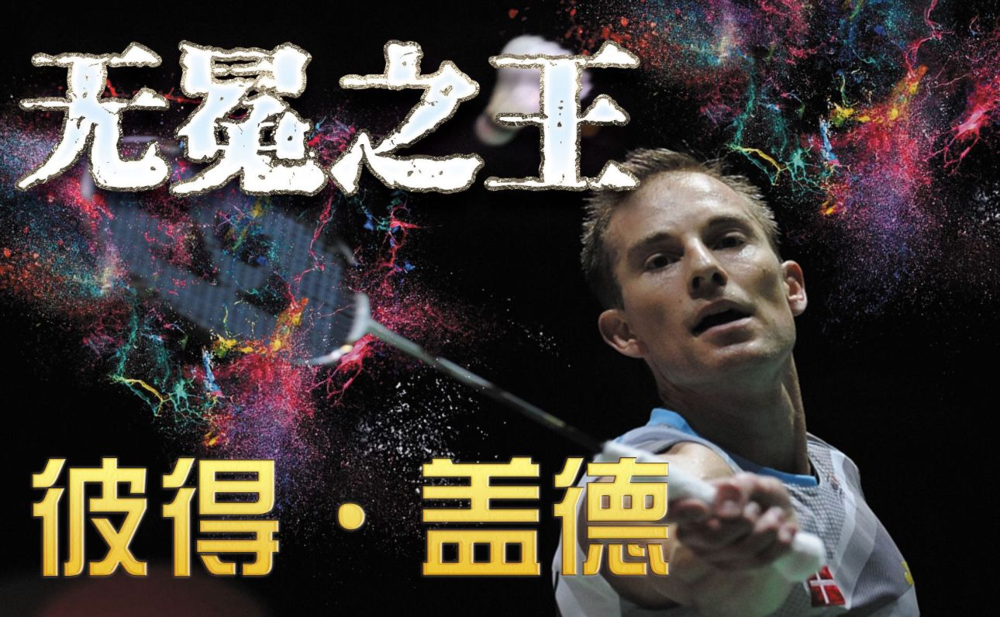
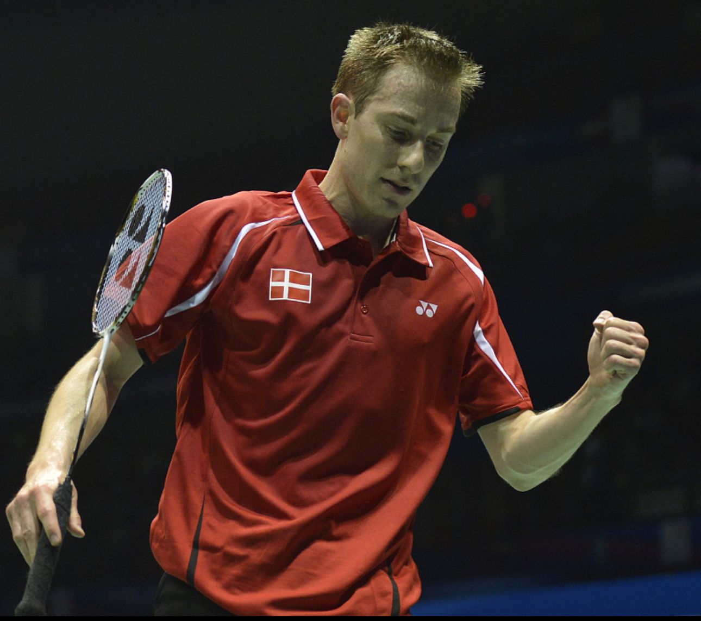

|  |  | ||
| 彼得·盖德 丹麦男子羽毛球单打运动员 |
国籍 丹麦 出生地 奥尔堡 出生日期 1976年12月14日 身高 1.84 m 体重 73 公斤 |
最高世界排名为第1名，职业生涯战绩为470胜128负，曾经连续62周名列世界第一，他是世界上最优秀的单打选手之一，却没有获得过任何一个奥运会、世锦赛甚至汤姆斯杯的冠军。 | |
| 中文名 彼得·盖德 外文名 Peter Gade |
运动项目 羽毛球男子单打 所属运动队 Gentofte Badminton羽毛球俱乐部 握拍 右手 兴趣 音乐、酒、足球、烹饪 |
||
| 点此返回 | |||